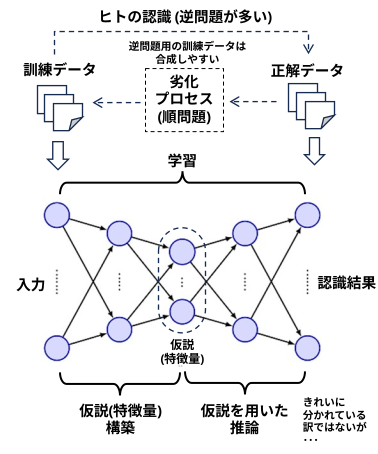

"私たちは「AI以前」を知る最後の世代であり、「AI以後」を形作る最初の世代でもある。"
『ヒトとAI』 岡野原大輔
AI(機械学習)の時代では、大量の訓練データを使って、名もない仮説(事前情報、特徴量) を大量に作り出して問題を解いてしまうが、
(しかも逆問題の学習データは機械的に合成しやすい)

AI以前の時代には、研究者が手作りの仮説、アルゴリズムを提案して問題を解いていた。
・gauss フィルター, laplaceフィルタ、Sobelフィルタ、Prewitt フィルタ、･･･
・Harris, SIFT, SURF, FAST, BRISK, ORB、AKAZE･･･
・haar-like 特徴、HOG、LBP、･･･
そんな仮説、アルゴリズムとお試しコードを集めてみようかと思う。